Day-by-Day Deep Dives
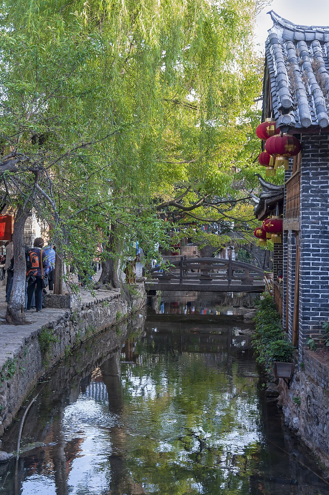
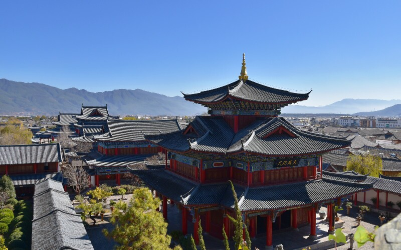
MARCH 8 — ARRIVE LIJIANG, DAYAN OLD TOWN ---
HOTEL: Kuanshang Lijiang (宽上丽江)
Lijiang (麗江) sits at 2,400m elevation on a high plateau ringed by mountains. The Dayan ("Great Inkstone") Old Town — the UNESCO-listed historic center — was built by the Naxi from roughly the 13th century onward under the Mu clan chiefs (土司 tǔsī, the indigenous rulers who governed with nominal Ming dynasty approval).
1996: a 7.0 magnitude earthquake hit Lijiang. The modern concrete buildings collapsed. The old town — built of wood, stone, and compressed earth using traditional joinery (minimal nails, flexible mortise-and-tenon connections) — survived substantially intact. This is not a coincidence. Traditional Naxi construction uses techniques that allow buildings to flex rather than shatter under seismic stress. The earthquake actually accelerated UNESCO listing (1997) because the international community recognized what had just been demonstrated.
Dayan Old Town has a canal system fed by Black Dragon Pool. Three streams branch through the town, and historically there was a strict usage protocol:
- First stream level: drinking water (taken before 8 AM)
- Second level: washing vegetables and food
- Third level: washing clothes and general use
This was essentially urban water management from the 13th century — enforced by community social norms, not municipal infrastructure. Over 354 stone bridges cross the canal network. The paving stones throughout the old town are local slate, polished to a mirror shine by centuries of foot traffic. In evening light, the reflections create the "water and stone" aesthetic that old photos of Lijiang are famous for.
The town is organized around four main squares, but wander the small lanes.
- Sifang Street (四方街): the historic market center, where the main weekly
market was held. Still the social heart of the old town.
- The water wheels near the entrance: decorative now, but historically used
to power mills. Five wooden waterwheels are the photographic "symbol" of Lijiang — installed/restored in the 1990s, so not ancient, but aesthetically accurate.
- Naxi woodcarving on building eaves: look for the Eight Trigrams (八卦) symbols,
fish (fertility/abundance), and cloud patterns. These aren't decorative afterthoughts — they encode cosmological and protective meanings.
- The Mu Family Mansion (木府): the palace of the Mu clan hereditary chiefs.
Reconstructed post-earthquake but based on historical records. Worth a quick look to understand the political structure that built this city.
Your first night: eat at a restaurant serving 粑粑 (bābā) — Naxi flatbread, griddled with fillings. The savory version with local cured pork (火腿 huǒtuǐ, Yunnan ham, which is to China what prosciutto is to Italy) is the local staple. Order 臘排骨 (là páigǔ) — smoked ribs, local specialty. Wash it down with 苦茶 (kǔ chá, bitter tea) — you're in tea country now.
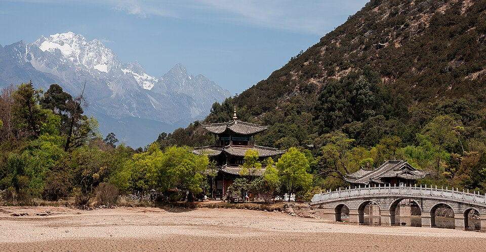
MARCH 9 — BLACK DRAGON POOL, DAY AN OLD TOWN, BAISHA ---
The pool is spring-fed and has a distinctive cyan-blue color from the mineral content and depth. The color changes through the day and season. The classic view: Deyue Pavilion (reflected in the pool) with Jade Dragon Snow Mountain visible directly behind it on clear days. This view is on every Lijiang postcard.
What most tourists miss: the Dongba Culture Museum is IN this park. It houses an excellent collection of Dongba manuscripts, ceremonial objects, and explanatory exhibits in English. Go here before visiting the old town; it'll frame everything you see afterward. The museum explains the Dongba cosmological universe, the script, and the ritual functions of various objects. Budget 1.5 hours.
Lijiang Old Town has hundreds of tea shops. Most sell mediocre tea to tourists. To find good tea:
- Look for shops that have clearly organized storage (temperature/humidity matter)
- Ask to see the tea cake before buying — inspect the pressing and leaves
- A good shopkeeper will let you taste multiple versions and talk about storage
- Price signals: under ¥80/cake is usually plantation tea; ¥150-400 is better
material; anything claiming to be "aged 10+ years gǔshù" for under ¥500 is probably lying
Good question to ask: "這個是倉儲多少年的?" (How many years has this been stored?) and "幹倉還是濕倉?" (Dry storage or humid storage?) — dry storage is generally considered cleaner/more desirable for aged sheng pu'er. More in the Pu'er Primer.
Baisha is 8km north of Lijiang and was the original Naxi capital before the Mu clan moved their seat to Lijiang in the 13th century. It's smaller, quieter, and has something Lijiang Old Town lacks: the Baisha Murals (白沙壁畫).
The Baisha Murals are a series of large Buddhist/Taoist/Dongba religious paintings commissioned by Mu clan chiefs in the 14th-16th centuries. Here's what makes them remarkable: they were painted collaboratively by Han Chinese, Tibetan, and Naxi artists, each contributing their stylistic tradition. The result is a visual synthesis you won't find anywhere else — Buddhist iconography in Tibetan style sits next to Taoist deities in Han style, next to Dongba symbolic elements. You can literally trace the cultural exchange of the Tea Horse Road era in a single wall painting.
Most tourists skip Baisha because there's not much to "do" there beyond seeing the murals. That's exactly why it's worth going. The village feels like what Lijiang would have been 30 years ago.
Also in Baisha: look for Dr. Ho Shixiu, an elderly herbalist who became famous after Bruce Chatwin wrote about him. He may or may not still be practicing, but his clinic (if open) is a Naxi herbal medicine practice that's been going for decades. Worth a peek.
The best ground-level views of the full mountain range are from Baisha and the fields between Baisha and Lijiang — you're looking at 13 peaks, the highest at 5,596m. The mountain catches clouds most afternoons. Morning is clearest. On clear days, the glacier (now retreating) on the main face is visible.
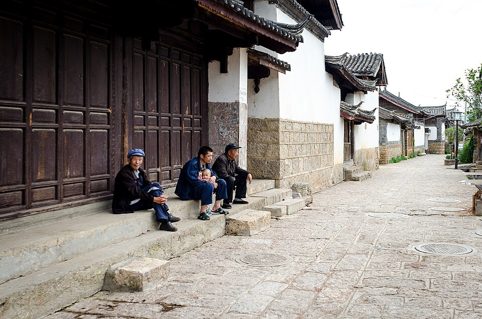
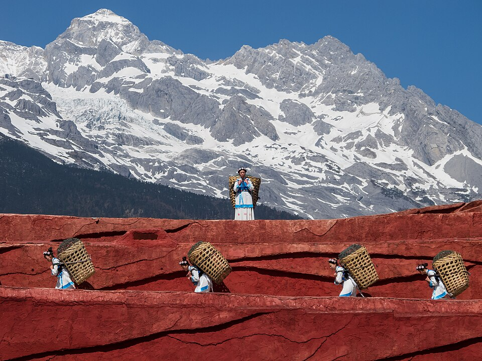
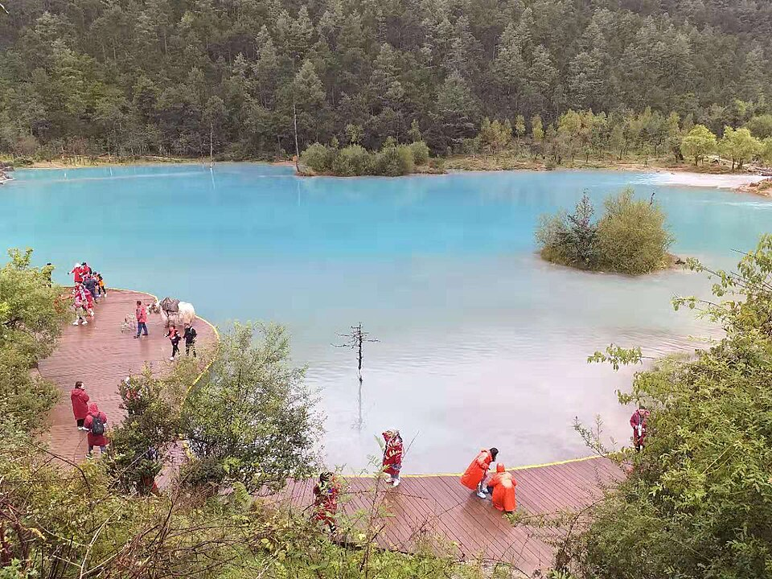
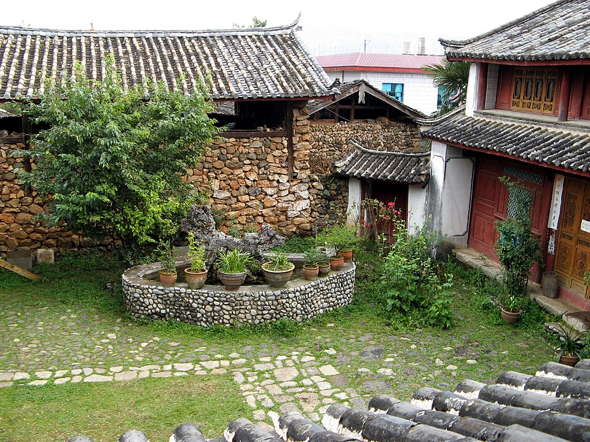
MARCH 10 — JADE DRAGON SNOW MOUNTAIN, BLUE MOON VALLEY, IMPRESSIONS, YUHU ---
(See dedicated sections on JDSS and Impressions Lijiang below.)
Within the JDSS national park, Blue Moon Valley is a series of three lakes fed by glacial meltwater. The colors are vivid — turquoise, jade green, and in strong sunlight, electric blue — because the glacial water is extraordinarily pure and the suspended fine-particle "glacial flour" (rock ground to powder by ice movement) creates Rayleigh scattering effects. It's the same reason glacier lakes in the Alps and Canadian Rockies look unnaturally colored.
The lakes are named: Jade Lake (玉液湖), Pearl Shoal (珍珠灘), and Blue Moon Lake (藍月湖). The characteristic boardwalk extends along the valley. The water is cold enough year-round that it doesn't support most aquatic life, so it stays remarkably clear.
Warning on the crowds: Blue Moon Valley is extremely popular and can be crowded with tour groups. Go early (opening time) or late in the day. The quieter walk along the creek edges (rather than the main boardwalk) gives better views anyway.
Yuhu Village is where Joseph Rock — the Austrian-American botanist, explorer, National Geographic writer, and general eccentric who introduced Naxi culture to the Western world — lived for roughly 27 years (1922-1949). Rock used Yuhu as his base for botanical expeditions throughout Yunnan, Tibet, and Sichuan. He collected over 80,000 plant specimens sent to Harvard, described hundreds of previously unknown species, and shot thousands of photographs documenting Naxi culture, Tibetan monasteries, and the region's natural history.
The holy shit fact about Rock: J.R.R. Tolkien reportedly drew inspiration from Rock's National Geographic articles for his descriptions of Middle Earth — the high mountain landscapes, the ancient cultures with their own scripts and cosmologies, the sense of a world existing outside the modern one. Whether this is provable or apocryphal, the connection gets cited often enough to mention.
Rock's house in Yuhu has been preserved and functions as a small museum. His photos document the valley before mass tourism — comparing them to what you see today is a sobering time-lapse. The Naxi family who hosted Rock for decades still has descendants in the village. A Naxi home visit here is genuinely meaningful: you're not visiting a staged performance, you're visiting a family whose grandparents had breakfast with one of the most important ethnographers of 20th-century Asia.
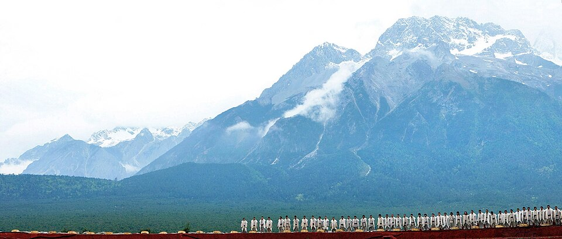
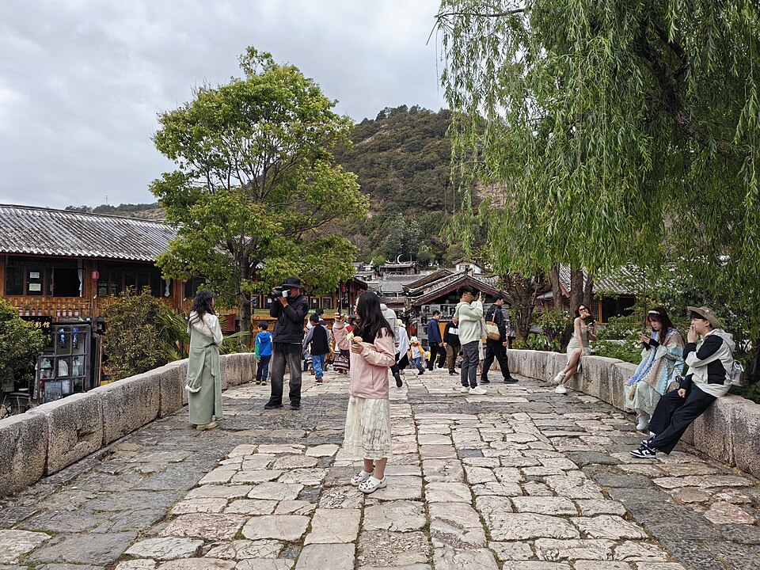
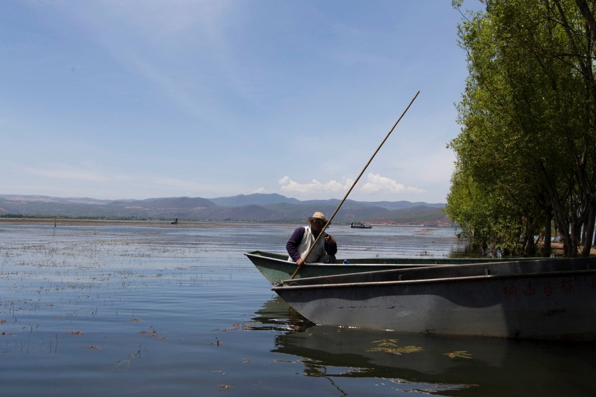
MARCH 11 — LASHI LAKE HORSEBACK, SHUHE OLD TOWN ---
The horseback trails at Lashi Lake follow sections of the actual Tea Horse Road. The terrain is gentle by the lake but gives you a physical sense of what it meant to transport goods by horse or mule over this landscape. Modern roads now run parallel — but the old stone-paved sections of the tea road are still visible in places as slightly elevated causeways cutting across the farmland.
March timing: Lashi Lake is an important migratory bird wetland. Early March is tail end of wintering season — you might see bar-headed geese (which migrate OVER the Himalayas — the highest-flying migratory bird on Earth), black-necked cranes (endangered), and various duck species. The lake environment shifts dramatically with season; March is transitional, often clear, with snow still on the mountains reflected in the water.
The horseback experience here is run by local Naxi families. The horses are local breeds, descended from the animals that made this trade possible. Ask your guide about the horse breeds and their role in the Tea Horse Road — good conversation territory.
Shuhe is actually OLDER than Lijiang's Dayan Old Town — it was an early Naxi settlement and a significant stop on the Tea Horse Road, specifically known for leather goods and tanning. The caravans needed harnesses, saddles, and bags — all of which required leather — and Shuhe's craftsmen supplied them.
Also UNESCO-listed (same designation as Dayan), Shuhe is significantly less touristy than the main Lijiang old town. Its water system is arguably more impressive — the spring complex (Jiuding Dragon Pool, 九鼎龍潭) feeds multiple streams through the village. The main square is smaller than Sifang Street but more architecturally coherent.
What to look for: the ancient leather workshop sites (now mostly converted to shops, but look for the courtyard structures that would have housed craftsmen and their tools); the stone-paved paths showing deep wear from centuries of caravan traffic; the well-preserved Naxi domestic architecture with its distinctive bracketed eaves and courtyard layouts.
Food at Shuhe: try 雞豆涼粉 (jīdòu liángfěn) — chickpea jelly noodles, a local Naxi street food that's cheap, refreshing, and genuinely delicious. It's the kind of thing locals eat, not the tourist versions.
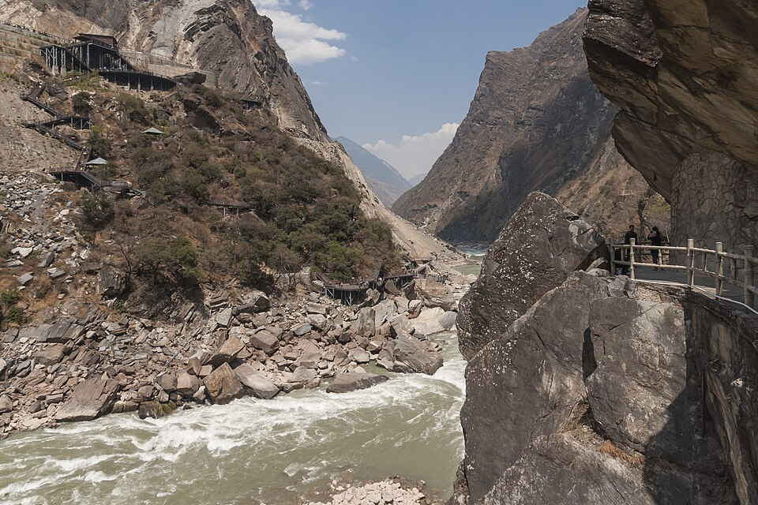
MARCH 12 — TIGER LEAPING GORGE, DRIVE TO SHAXI ---
(See dedicated Tiger Leaping Gorge section below.)
The drive from Tiger Leaping Gorge to Shaxi (roughly 3-4 hours) passes through the Jinsha River valley, then climbs over ridges into the Jianchuan valley where Shaxi sits. The landscape transitions from the dramatic gorge topography to softer valley farmland with terraced fields. March means the rape flower (菜花) season — yellow fields against green hills, classic Yunnan spring scenery.
The road passes through Jianchuan County — known for woodcarving. If you stop for lunch, look for a woodcarving shop: Jianchuan craftsmen have made the ornate wooden architectural elements for buildings throughout Yunnan for centuries.
Hotel: Sunyata Shaxi — a boutique property in the village area. Good base for exploring on foot. The village at night (with minimal light pollution) has extraordinary star visibility at 2,200m altitude. Worth staying up for.
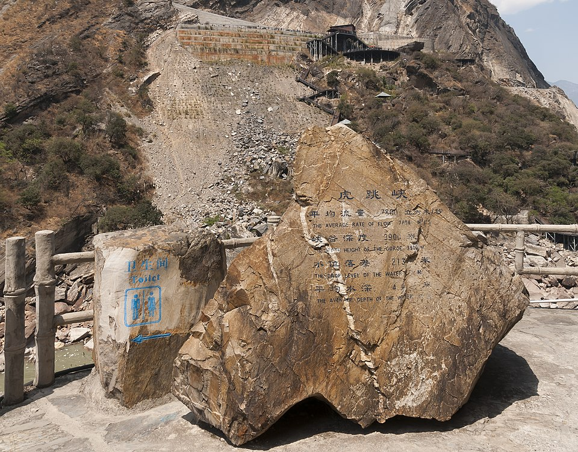
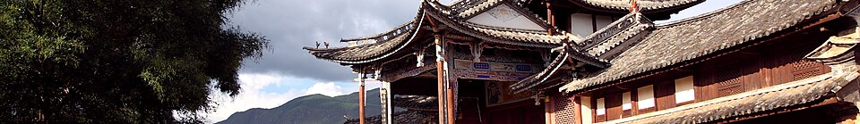
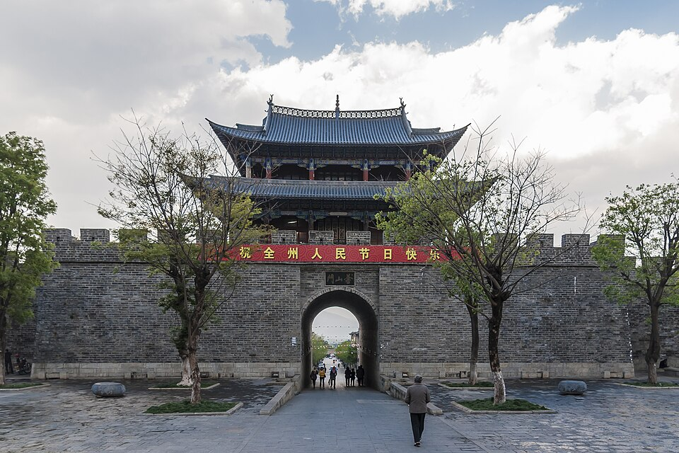
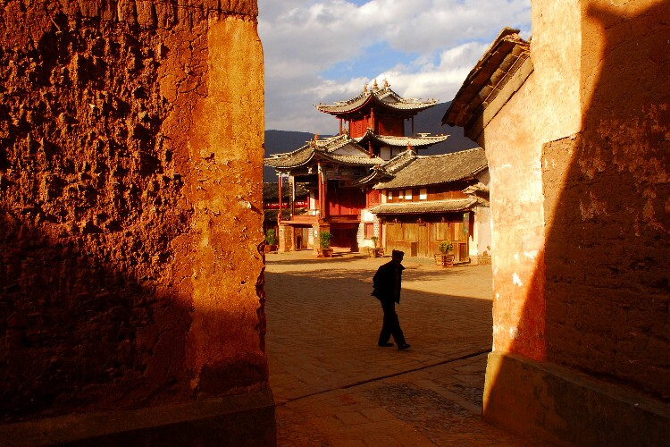
MARCH 13 — SHAXI, DRIVE TO DALI, DALI OLD TOWN, CATHOLIC CHURCH ---
Rise early if possible. The village before 8 AM, before tour groups arrive, is a completely different experience. Local Bai farmers walking to market, smoke from morning fires, the sound of the Sideng Square fountain.
Key things to understand about Sideng Square:
- The Xingjiao Temple on the square is Buddhist with strong Tibetan influences —
this is the visual proof that the Tea Horse Road was a cultural exchange route, not just a trade route. Tibetan merchants, monks, and traders passed through constantly, leaving religious and architectural influences.
- The ancient stage (戲台, xìtái) on the square: traditional performances were
offered here to deities before major market days. The stage has been restored and occasional performances still happen.
- The original caravanserai (馬店): the doorway arches that still exist around
the square perimeter are entrances to what were the stables and rest facilities. The scale of the arches tells you about the size of the animals passing through.
The TV show 去有风的地方 (Where the Wind Blows, 2023 — also translated as A Journey to the West): starred Liu Yifei and Li Xian; romantic drama set between Shaxi and other Yunnan locations. It triggered a massive tourism surge in Shaxi. The show is culturally significant beyond tourism: it was part of a wave of "slowlife" content that Chinese urban audiences responded to during and after pandemic lockdowns — a fantasy of escaping to rural simplicity. Shaxi became a symbol. Expect souvenir shops themed to the show.
(See dedicated Dali/Nanzhao section below for historical context.)
Dali Old Town (大理古城) is the reconstructed historic center — not the same as the ancient royal capital, which is further south near modern Xiaguan. What you're seeing in Dali Old Town is largely Ming-dynasty layout with significant reconstruction. It's more "complete" than Lijiang in some ways (walls, gates intact) but less organically preserved.
The presence of a Catholic church in Dali requires explanation because it seems incongruous — deep in a Buddhist and Dongba-religion region of Southwest China, there's a European-style Catholic church. Here's how it got there:
After the Opium War treaties (Nanjing 1842, Tientsin 1858), China was forced to permit foreign missionaries to operate throughout the country. The French MEP (Missions Étrangères de Paris — the same order that evangelized much of Southeast Asia) moved into Yunnan in the 1840s-1880s. They were drawn partly by the geographic connection to their existing missions in Vietnam and Burma.
The MEP missionaries faced brutal opposition at times (several were martyred in Yunnan during the Boxer era), but also found receptive communities among Bai and other ethnic minorities who had complex relationships with Han Buddhist/Confucian orthodoxy. Some Bai villages converted substantially — and built Catholic churches using Bai architectural styles, creating the syncretic style you'll see: European liturgical floor plan with local tile, carved wooden elements, and layout.
The Dali church has been through Communist-era closure, Cultural Revolution damage, and restoration. It functions again today. The fusion architecture is the thing to look for — it's a physical record of how two cultural worlds negotiated a meeting point.
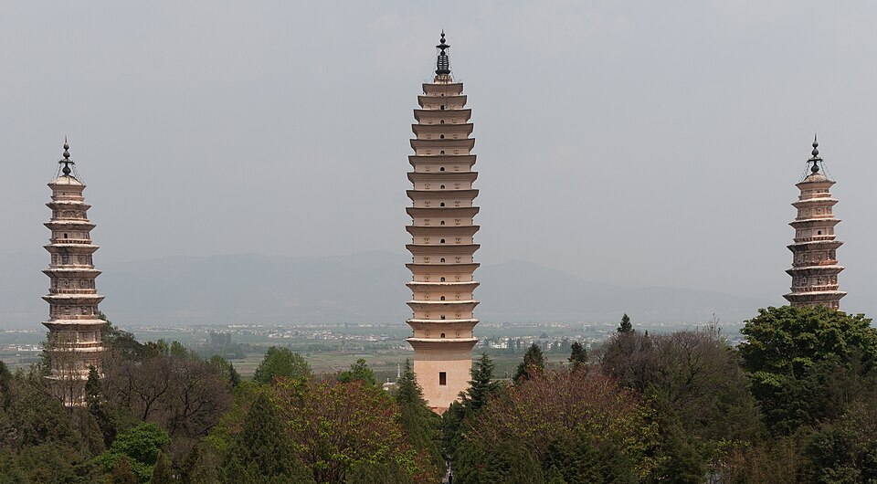
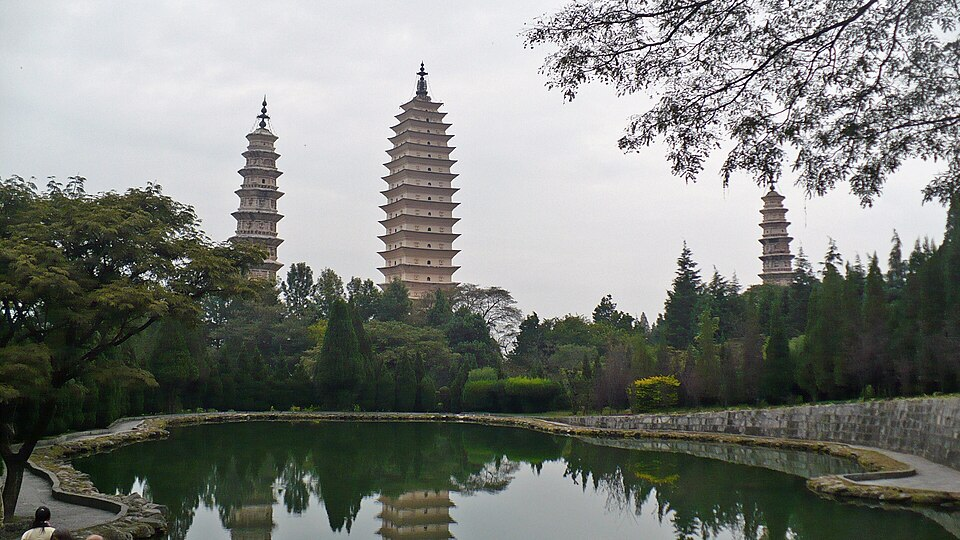
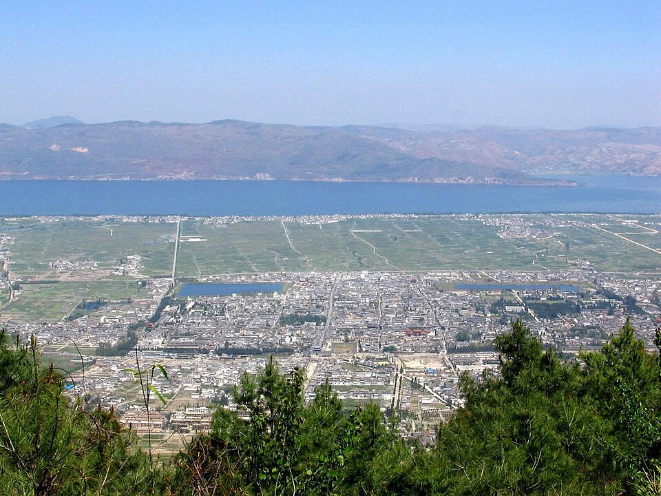
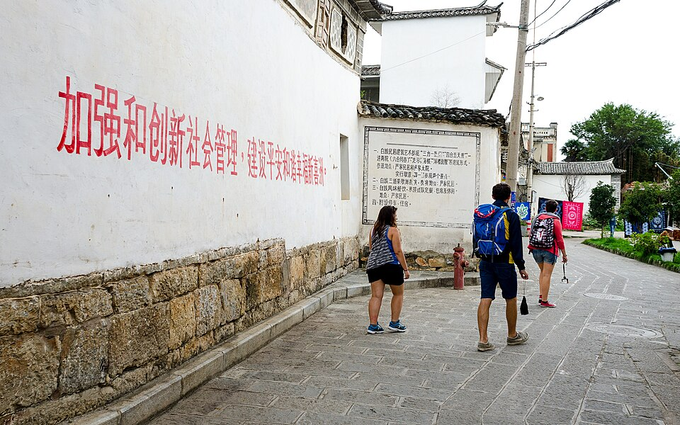
MARCH 14 — XIZHOU, MUSHROOM HOTPOT, TIE-DYE, ERHAI LAKE ---
Xizhou is the best-preserved example of traditional Bai village architecture in the Dali area. Unlike Dali Old Town (which has significant modern reconstruction), Xizhou's traditional courtyard compounds (大院, dàyuàn) are mostly intact and still inhabited by Bai families.
Look for: the ornate screen walls I mentioned earlier — some are genuinely spectacular, with colored mineral pigment paintings depicting scenes from Chinese mythology or abstract geometric patterns. The "照壁" (zhàobì) screen walls in the wealthiest Xizhou compounds are considered the finest examples of this Bai architectural tradition.
Also look for: the scale and proportion of the traditional compounds. The largest ones (like the famous Yan Family Compound, 嚴家大院) have multiple courtyards nested within each other — wealth was expressed in depth of property, not height. This contrasts with Han Chinese merchant architecture from the same era (Shanxi/ Huizhou merchants built taller, showed wealth vertically). Understanding why shows you something about how Bai social structure valued horizontal family expansion rather than vertical status display.
Yunnan has the highest mushroom biodiversity in China — and probably Southeast Asia. Over 850 species of edible mushrooms have been documented in Yunnan. The province supplies the majority of China's wild mushroom market. This is not a trivial fact: mushroom export is a major sector of the Yunnan economy.
The species you might encounter in a premium mushroom hotpot:
- 松茸 (sōngróng) — Japanese matsutake, grows near the Tibet border, intensely
aromatic, expensive (¥500+/kg in peak season, late summer, so March you'll see dried or preserved versions)
- 牛肝菌 (niúgānjūn) — porcini/cep, earthy and meaty, the backbone of Yunnan
mushroom cuisine
- 雞油菌 (jīyóujūn) — chanterelle, golden, slightly fruity flavor
- 雞樅菌 (jīzōngjūn) — termite mushroom (grows in termite colonies), mild and
delicate, uniquely Yunnan
- 見手青 (jiànshǒuqīng) — various Boletus species that turn blue when cut
(oxidation reaction). Some of these are mildly toxic if undercooked and will cause hallucinations. The local saying is: "The fairies dancing you see after eating them aren't worth the trip to the hospital." Properly cooked, they're fine and delicious. Ask your guide if you encounter them.
The holy shit fact: Yunnan has a documented seasonal death toll from accidental mushroom poisoning each year (primarily from death cap amanitas — 毒鵝膏菌 — which look similar to edible species). The provincial government runs annual mushroom identification campaigns. Eat mushrooms at reputable restaurants only.
Erhai ("Ear Sea") gets its name from its shape — it's roughly ear-shaped from above, and "hai" in local dialect means lake rather than sea (this is a Bai language term, not Mandarin). The lake is 250 km² and sits at 1,974m altitude — large enough that it has its own weather patterns.
Historically, Erhai was a highway. The Bai kingdom's major settlements were all lakeside, and boats were the primary transport. The ancient fishing techniques — including cormorant fishing using trained birds — have historical roots here, though they're practiced largely as demonstrations now.
The cycling route along Longkan Wharf area gives good views across to the Cangshan (蒼山) mountains on the western shore — a range of 19 peaks that form the backdrop to Dali. The highest is 4,122m, and they retain snow through March. The light on Erhai in late afternoon is famous among photographers.
Environmental note: Erhai faced serious pollution from agricultural runoff and tourism development pressure through the 2000s-2010s. Beginning around 2018, Dali undertook aggressive environmental protection measures — closing lakeside restaurants, restricting development, reducing fertilizer use. The water quality has substantially improved. This is a good conversation topic with locals.
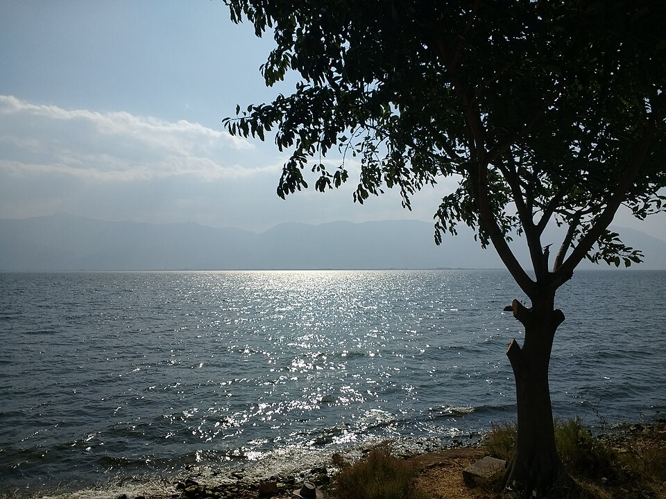
MARCH 15 — DEPART DLU → CAN ---
Dali Daxue Airport (DLU) is small and relatively new. Allow 2 hours before departure. Flight CZ3482 departs 10:30, arrives Guangzhou 12:45.
If you have morning time before the airport: walk along Dali Old Town's west gate (西門) and the wall section near it — the morning light on the Cangshan mountains from this angle is excellent. Also good time for a final coffee at one of the Yunnan-specialty coffee shops (Yunnan produces excellent Arabica — grown at altitude in the south of the province, it's underrated globally).